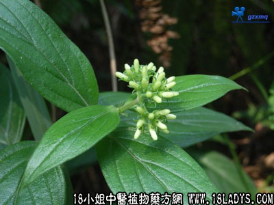

别名：甜茶、大叶鲗鱼叶。
植物名：牛白藤。
生长环境：本品为藤状灌木。是常见的野生山地植物，或生于河涌边的灌木丛中。
分布：我国南部地区或海南均能找到这种植物。
入药部分：叶。
采集期：夏、秋。
自采地点：山岗。
性味：性微凉、味甘。
功能：清热解毒。
主治、用量和用法：1、皮肤痒：干叶1至2两，煎水洗，亦可内服；2、皮肤生蛇：用法同上。
验方：（治皮肤生蛇方）大叶龙胆草1两、一炷香5钱、秋苦瓜5钱、田基黄5钱、蛇总管5钱、清水四碗，煎成一碗服。
（方解）皮肤生蛇，乃因风热湿毒而成。本方五味同属清热散毒药，一炷香兼有祛风作用，治疗皮肤生蛇，疗效甚高。
（方歌）皮肤生蛇痕痒苦，炷香大叶鲗鱼草，总管田基秋苦瓜，解毒止痒真正好。
附录：（根）即土加皮，治风湿骨痛，配伍用。
验方：（治风湿骨痛方）土加皮5钱、丢了棒根5钱、臭屎茉莉5钱、半枫荷5钱、东方桔5钱、清水四碗，煎成一碗服。
（方解）土加皮，丢了棒善祛湿；半枫荷、臭屎茉莉根祛风祛湿，舒筋活络；东风桔疏风热，止骨节痛。合为祛风祛湿，舒筋活络止痛之剂。
（方歌）风湿骨痛土加求，丢了棒根茉莉头，半枫荷与东风桔，祛湿祛风痛即休。